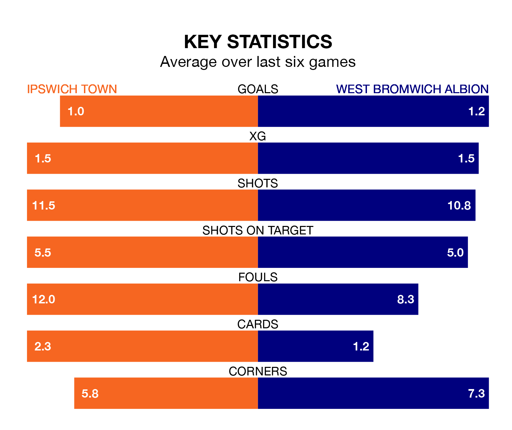

Ipswich Town host West Bromwich Albion in Saturday lunchtime's match at Portman Road looking to bounce back from defeat last time out in EFL Championship.
The Blues, who sit fourth in the league after 29 games, fell to a 3-2 away defeat to Preston North End on February 3.
They face a West Bromwich side who picked up a win in their last match, a 1-0 victory against Birmingham City, and who sit fifth in the table.
With 53 goals in 29 games so far this season, Ipswich are the league's third-highest scorers with 1.8 goals per game. And they are conceding fewer than average, letting in 38 goals at a rate of 1.3 per game.
West Bromwich, meanwhile, are average scorers, with 1.4 goals per game. They have conceded 0.9 goals per game.
In Alex Palmer, Albion can rely on one of the league's safest pair of hands. He has kept 13 clean sheets in his 29 appearances this season, and no 'keeper has prevented the opposition scoring more often in EFL Championship.
In Town's net, Václav Hladký has nine clean sheets in 29 games. He has conceded a goal every 77 minutes, 40% more often than the 104 minutes between goals for Palmer.
The Blues are in mixed form in EFL Championship, with one win and four draws from their last six games.
With four wins and two losses over that period, the Baggies' form is better – they have taken 12 points from 18, compared to the hosts' seven.
Updated: 10:01 (UTC), 06/02/24